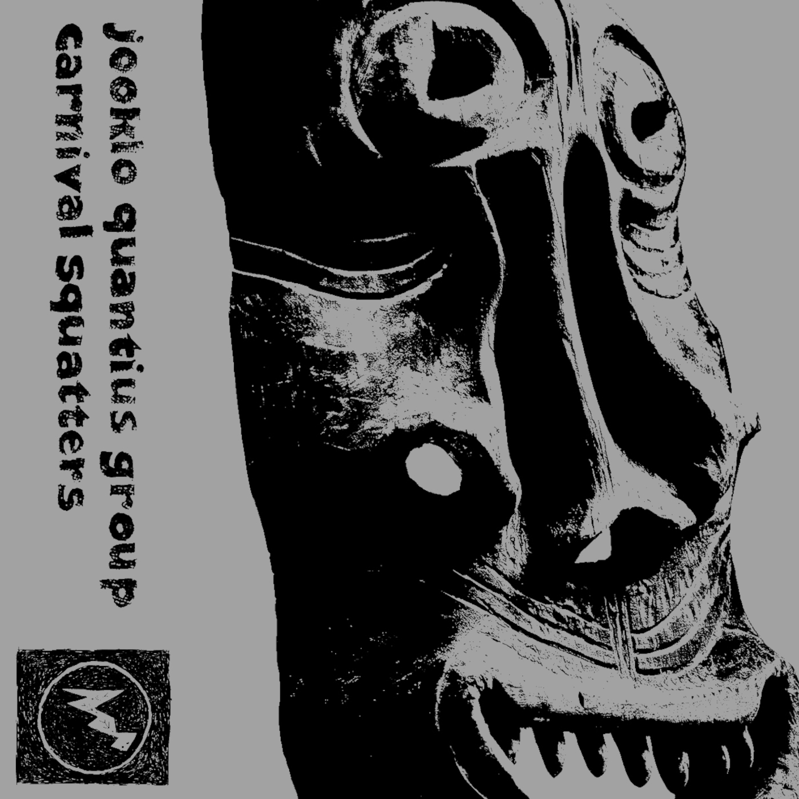

- 


Carnival Squatters
Jooklo Quantius Group
To buy write to mondoweirdorecords@gmail.comBuy on Bandcamp
At the beginning of 2024 I found myself on a trip up to North-West with my fellows Virginia and David (of Jooklo fame) in their legendary green Scudo van. I was ready for whatever adventure and trying to up-lift my friends from an uncomfortable situation they had at that time in a small town of the Ruhrgebiet named Moers, where they were temporarily based. The mood of the road that week was of rebellion, feeling of fixing injustice, and consequently the strenghtening of belief in underground brotherhood as opposed to corporate institutionalism and their hierarchy cages of gold. But only after a couple of days, the Scudo van broke down and we got stuck on the highway.
What followed this shit situation was a call to one of our Cologne's friends, Seb, who recovered our gear and brought us to his home. That week happened to be during full-on Carnival time, which seems to be a big thing for Cologne. But don't expect the Brazilian show here, people just wants to be schlaga, acts more stupid than ever with a cold beer in their freezing hand, and dress silly (why all those cops' costumes? Is it a tradition? Bleeehhhh!)....
So the garage decided to hold the van for few days and we had no escape from this trashy madness. Luckily Cologne is the place where Mik Quantius lives, who had already shared some music experiences with the Jooklos, and was willing to be empathic and helpful.
Since music is always the healing force, Seb had the sparkle to invite us all for a session in his reharsal space, optimizing the situation, setting up mics and gear for recording. The mood of the session was immediately set by what we all had in our hearts and brains at that time: the will of breaking pre-set forms and structures, pushing away the harsh reality and elevate ourselves to a pure sound, free from constrictions, ideas, expectations. All the stream of mixed emotions got washed away when the music started to flow in a vortex of freedom and love in one of the highest expressions. "Carnival Squatters" flies you on its wings, out of the jungle of concrete directly into lucid dreams of unknown vegetation, dusty river banks, far out corners of the cosmos. An unconventional trip outside the chains of social mind control. Tradition is only a starting point.
Mik Quantius : voice
David Vanzan : percussions, synth, radio
Virginia Genta : clarinet, soprano sax, flutes, suona, harmonica
Andrea Davì : electric doubleneck guitar/bass
Sebastian Von Der Heide : drums
recorded 12.02.2024 in Köln by Sebastian Von Der Heide
mixed/mastered by Andrea Davì
released by Mondo Weirdo Records on 23th April 2025
MWR003